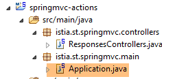
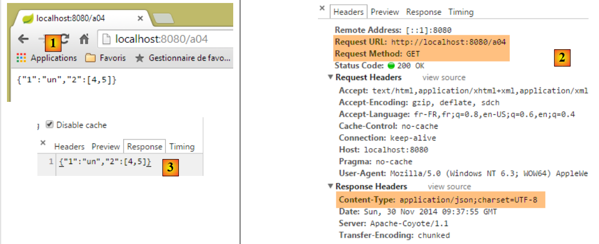
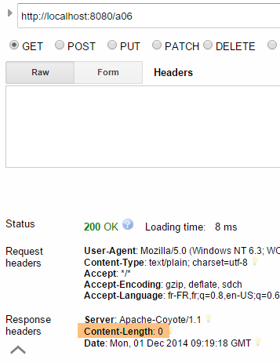
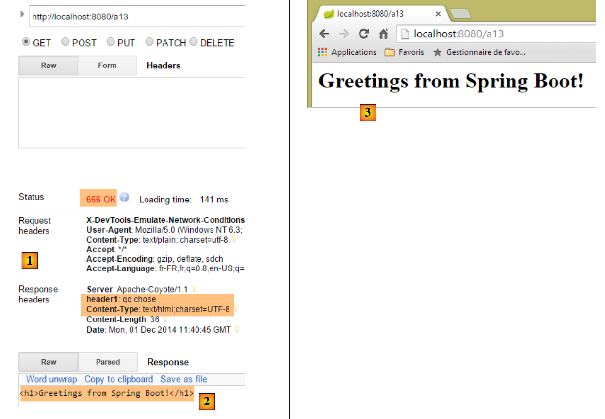

3. Aktionen: Die Antwort
Betrachten wir die Architektur einer Spring-MVC-Anwendung:
 |
In diesem Kapitel untersuchen wir den Prozess, der die Anfrage [1] an den Controller und die Aktion [2a] weiterleitet, die sie verarbeiten wird – ein Mechanismus, der als Routing bekannt ist. Wir stellen auch die verschiedenen Antworten [3] vor, die eine Aktion an den Browser zurückgeben kann. Dies kann etwas anderes als eine V-Ansicht [4b] sein.
3.1. Das neue Projekt
Wir erstellen ein neues Spring-MVC-Projekt:
 |
- In [1-2] erstellen wir ein neues Projekt auf Basis von Spring Boot;
 |
- in [3] den Namen des Maven-Projekts;
- in [4] die Maven-Gruppe, in der die Kompilierungsergebnisse des Projekts abgelegt werden;
- in [5] der Name, der der Kompilierungsausgabe gegeben wird;
- in [6] eine Beschreibung des Projekts;
- in [7] das Paket, in dem die ausführbare Klasse des Projekts abgelegt wird;
- in [8] die Art des Projekts. Es handelt sich um ein Webprojekt mit Thymeleaf-Ansichten. Hier sehen wir alle gebrauchsfertigen Maven-Abhängigkeiten, die vom Spring Boot-Projekt bereitgestellt werden;
- in [9] legen wir fest, dass das Ergebnis des Maven-Builds in einem JAR-Archiv statt in einer WAR-Datei gepackt wird. Das Projekt wird dann einen eingebetteten Tomcat-Server verwenden, der in seinen Abhängigkeiten enthalten sein wird;
- in [10] fahren wir mit dem nächsten Schritt des Assistenten fort;
- in [11] geben wir das Projektverzeichnis an;
 |
- in [12] das generierte Projekt;
- In [14-15] benennen Sie das Paket [istia.st.springmvc] um;
 |
- in [16] den neuen Paketnamen;
- in [17] das neue Projekt;
Wir erstellen nun eine neue Klasse;
 |
- in [1-3] erstellen wir eine neue Klasse;
 |
- in [5] geben wir ihr einen Namen, und in [4] legen wir ihr Paket fest;
- in [6] das neue Projekt;
Die Klasse sieht derzeit wie folgt aus:
package istia.st.springmvc;
public class ActionsController {
}
Wir aktualisieren diesen Code wie folgt:
package istia.st.springmvc;
import org.springframework.web.bind.annotation.RestController;
@RestController
public class ActionsController {
}
- Zeile 6: Die Annotation [@RestController] gibt zwei Dinge an:
- dass die auf diese Weise annotierte Klasse [ActionsController] ein Spring-MVC-Controller ist und daher Aktionen enthält, die Client-URLs verarbeiten;
- dass das Ergebnis dieser Aktionen an den Client gesendet wird;
Die andere Annotation [@Controller], auf die wir gestoßen sind, verhält sich anders: Die Aktionen eines auf diese Weise annotierten Controllers geben den Namen der Ansicht zurück, die angezeigt werden soll. Es ist dann die Kombination aus dieser Ansicht und dem von der Aktion für diese Ansicht erstellten Modell, die die an den Client gesendete Antwort liefert.
Die Änderung der Struktur unseres Projekts erfordert eine Änderung der Projektkonfiguration:
 |
Die Klasse [Application] entwickelt sich wie folgt:
package istia.st.springmvc.main;
import org.springframework.boot.SpringApplication;
import org.springframework.boot.autoconfigure.EnableAutoConfiguration;
import org.springframework.context.annotation.ComponentScan;
import org.springframework.context.annotation.Configuration;
@Configuration
@ComponentScan({"istia.st.springmvc.controllers"})
@EnableAutoConfiguration
public class Application {
public static void main(String[] args) {
SpringApplication.run(Application.class, args);
}
}
- Zeile 9: Die Annotation [ComponentScan] nimmt als Parameter ein Array mit Paketnamen entgegen, in denen Spring Boot nach Spring-Komponenten suchen soll. Hier fügen wir das Paket [istia.st.springmvc.controllers] in dieses Array ein, damit der mit [@RestController] annotierte Controller gefunden werden kann;
Wir werden verschiedene Aktionen im Controller erstellen, um deren Hauptmerkmale zu veranschaulichen. Zunächst konzentrieren wir uns auf die verschiedenen Arten von Antworten, die für eine Aktion in einer Anwendung ohne Views möglich sind.
3.2. [/a01, /a02] – Hello World
Unsere erste Aktion sieht wie folgt aus:
@RestController
public class ActionsController {
// ----------------------- hello world ------------------------
@RequestMapping(value = "/a01", method = RequestMethod.GET)
public String a01() {
return "Greetings from Spring Boot!";
}
}
- Zeile 4: Die Annotation [RequestMapping] gibt die Anfrage an, die von der mit dieser Annotation versehenen Aktion bearbeitet wird:
- Das Attribut [value] ist die zu verarbeitende URL,
- das Attribut [method] gibt die akzeptierte Methode an;
Somit verarbeitet die Methode [a01] die HTTP-Anfrage [GET /a01].
- Zeile 5: Die Methode [a01] gibt einen Typ [String] zurück, der unverändert an den Client gesendet wird;
- Zeile 6: Die zurückgegebene Zeichenfolge;
Führen wir die Anwendung wie schon mehrfach zuvor aus und fordern wir dann mit dem [Advanced Rest Client] die URL [/a01] mit einem GET [1-2] an:
 |
- in [3] die Antwort des Servers;
- in [4] die HTTP-Header der Antwort. Wir sehen, dass die verwendete Kodierung [ISO-8859-1] ist. Wir würden vielleicht die UTF-8-Kodierung bevorzugen. Dies lässt sich konfigurieren;
- in [5] rufen wir dieselbe URL mit dem Chrome-Browser auf;
Wir fügen die folgende Aktion [/a02] zum [ActionsController] hinzu (wir werden die URL manchmal mit der Methode verwechseln, die sie verarbeitet, die als Aktion bezeichnet wird):
// ----------------------- accented characters - UTF8 ------------------------
@RequestMapping(value = "/a02", method = RequestMethod.GET, produces="text/plain;charset=UTF-8")
public String a02() {
return "caractères accentués : éèàôûî";
}
- Zeile 2: Das Attribut [produces="text/plain;charset=UTF-8"] gibt an, dass die Aktion einen Textstrom mit Zeichen sendet, die im [UTF-8]-Format kodiert sind. Dieses Format erlaubt ausdrücklich die Verwendung von Zeichen mit Akzenten;
Um diese neue Aktion anzuwenden, müssen wir die Anwendung neu starten:
 |
Das Ergebnis sieht wie folgt aus:
 |
- In [1] sehen wir den vom Server gesendeten Dokumenttyp;
- In [2-3] sind die Zeichen mit Akzenten deutlich zu erkennen;
3.3. [/a03]: Einen XML-Stream zurückgeben
Wir fügen die folgende [/a03]-Aktion hinzu:
// ----------------------- text/xml ------------------------
@RequestMapping(value = "/a03", method = RequestMethod.GET, produces = "text/xml;charset=UTF-8")
public String a03() {
String greeting = "<greetings><greeting>Greetings from Spring Boot!</greeting></greetings>";
return greeting;
}
- Zeile 2: Das Attribut [produces="text/xml;charset=UTF-8"] gibt an, dass die Aktion einen XML-Stream mit Zeichen im [UTF-8]-Format sendet;
Die Ausführung ergibt Folgendes:
 |
- In [1] gibt der HTTP-Header an, dass es sich bei dem gesendeten Dokument um HTML handelt;
- in [2] nutzt der Chrome-Browser diese Information, um den empfangenen XML-Text zu formatieren;
Denken Sie daran, dass Sie in Chrome den HTTP-Datenaustausch zwischen Client und Server in der Entwicklerkonsole (Strg-Umschalt-I) einsehen können:

Von nun an werden wir nicht mehr systematisch Screenshots des HTTP-Datenaustauschs zwischen Client und Server erstellen. Manchmal werden wir einfach den Text dieses Austauschs zitieren.
3.4. [/a04, /a05]: Rückgabe eines JSON-Feeds
Wir fügen die folgende [/a04]-Aktion hinzu:
// ----------------------- produce from jSON ------------------------
@RequestMapping(value = "/a04", method = RequestMethod.GET)
public Map<String, Object> a04() {
Map<String, Object> map = new HashMap<String, Object>();
map.put("1", "un");
map.put("2", new int[] { 4, 5 });
return map;
}
- Zeile 3: Die Aktion gibt einen Typ [Map] zurück, also ein Wörterbuch. Erinnern Sie sich daran, dass bei einem [@RestController]-Controller das Ergebnis der Aktion die an den Client gesendete Antwort ist. Da HTTP ein Protokoll zum Austausch von Textzeilen ist, muss die Antwort des Clients in eine Zeichenkette serialisiert werden. Dazu verwendet Spring MVC verschiedene Konverter [Object <---> string]. Die Zuordnung eines bestimmten Objekts zu einem Konverter erfolgt über die Konfiguration. Hier überprüft die Autokonfiguration von Spring Boot die Abhängigkeiten des Projekts:
 |
Die oben aufgeführten Jackson-Abhängigkeiten sind Bibliotheken zur Serialisierung und Deserialisierung von Objekten in JSON-Zeichenfolgen. Spring Boot verwendet diese Bibliotheken dann, um die von den Aktionen zurückgegebenen Objekte zu serialisieren und zu deserialisieren. Ein Beispiel für Java-Code zur Serialisierung und Deserialisierung von Java-Objekten in JSON finden Sie in Abschnitt 9.7.
Beachten Sie in Zeile 2, dass wir den Typ der gesendeten Antwort nicht angegeben haben. Wir werden sehen, welcher Standardtyp gesendet wird.
Die Ergebnisse in Chrome lauten wie folgt [1-3]:
 |
Fügen wir nun die folgende Aktion hinzu [/a05]:
// ----------------------- produce from jSON - 2 ------------------------
@RequestMapping(value = "/a05", method = RequestMethod.GET)
public Personne a05() {
return new Personne(1,"carole",45);
}
Die Klasse [Person] sieht wie folgt aus:
 |
package istia.st.sprinmvc.models;
public class Personne {
// identifier
private Integer id;
// name
private String nom;
// age
private int age;
// manufacturers
public Personne() {
}
public Personne(String nom, int age) {
this.nom = nom;
this.age = age;
}
public Personne(Integer id, String nom, int age) {
this(nom, age);
this.id = id;
}
@Override
public String toString() {
return String.format("[id=%s, nom=%s, age=%d]", id, nom, age);
}
// getters and setters
...
}
Die Ausführung liefert folgende Ergebnisse:
 |
- in [1] gibt der Server an, dass es sich bei dem gesendeten Dokument um JSON handelt;
- in [2] das empfangene JSON-Dokument;
3.5. [/a06]: einen leeren Stream zurückgeben
Wir fügen die folgende [/a06]-Aktion hinzu:
// ----------------------- render an empty stream ------------------------
@RequestMapping(value = "/a06")
public void a06() {
}
- In Zeile 3 gibt die Aktion [/a06] nichts zurück. Spring MVC generiert daraufhin eine leere Antwort an den Client;
Die Ausführung liefert folgende Ergebnisse:
 |
Oben zeigt das HTTP-Attribut [Content-Length] in der Antwort an, dass der Server ein leeres Dokument sendet.
3.6. [/a07, /a08, /a09]: Datentyp mit [Content-Type]
Wir fügen die folgende Aktion [/a07] hinzu:
// ----------------------- text/html ------------------------
@RequestMapping(value = "/a07", method = RequestMethod.GET, produces = "text/html;charset=UTF-8")
public String a07() {
String greeting = "<h1>Greetings from Spring Boot!</h1>";
return greeting;
}
- Zeile 2: Die Aktion [/a07] gibt einen HTML-Stream [text/html] zurück;
- Zeile 4: eine HTML-Zeichenkette;
Die Ausführung liefert folgende Ergebnisse:
 |
- In [1] sehen wir, dass Chrome den HTML-Tag <h1> interpretiert hat, der seinen Inhalt in großer Schrift anzeigt;
Machen wir nun dasselbe mit der folgenden [/a08]-Aktion:
// ----------------------- result HTML in text/plain ------------------------
@RequestMapping(value = "/a08", method = RequestMethod.GET, produces = "text/plain;charset=UTF-8")
public String a08() {
String greeting = "<h1>Greetings from Spring Boot!</h1>";
return greeting;
}
- Zeile 2: Die Antwort der Aktion ist vom Typ [text/plain];
Die Ergebnisse lauten wie folgt:
 |
- In [1] interpretierte Chrome den HTML-Tag <h1> nicht, da der Server ihm mitteilte, dass er einen [text/plain]-Stream sende [2];
Versuchen wir etwas Ähnliches mit der folgenden [/a09]-Aktion:
// ----------------------- result HTML in text/xml ------------------------
@RequestMapping(value = "/a09", method = RequestMethod.GET, produces = "text/xml;charset=UTF-8")
public String a09() {
String greeting = "<h1>Greetings from Spring Boot!</h1>";
return greeting;
}
- Zeile 2: Wir senden einen [text/xml]-Stream;
Die Ergebnisse lauten wie folgt:
 |
- In [1] interpretierte Chrome den HTML-Tag <h1> nicht, da der Server ihm mitteilte, dass er einen [text/xml]-Stream sende [2]. Daraufhin behandelte Chrome den Tag <h1> als XML-Tag;
Diese Beispiele verdeutlichen die Bedeutung des HTTP-Headers [Content-Type] in der Antwort des Servers. Der Browser verwendet diesen Header, um zu bestimmen, wie das empfangene Dokument interpretiert werden soll;
3.7. [/a10, /a11, /a12]: Umleitung des Clients
Wir erstellen einen neuen Controller [RedirectController]:
 |
Der Code für [RedirectController] sieht vorerst wie folgt aus:
package istia.st.springmvc.controllers;
import org.springframework.stereotype.Controller;
import org.springframework.web.bind.annotation.RequestMapping;
import org.springframework.web.bind.annotation.RequestMethod;
@Controller
public class RedirectController {
}
- Zeile 7: Wir verwenden die Annotation [@Controller], was bedeutet, dass sich der Typ [String] des Aktionsergebnisses standardmäßig nun auf den Namen einer Aktion oder einer Ansicht bezieht;
Wir erstellen die folgende Aktion [/a10]:
// ------------ bridge to third-party action -----------------------
@RequestMapping(value = "/a10", method = RequestMethod.GET)
public String a10() {
return "a01";
}
- Zeile 4: Wir geben „a01“ als Ergebnis zurück, was der Name einer Aktion ist. Diese Aktion sendet dann die Antwort an den Client;
Hier ist ein Beispiel:
 |
- In [2] haben wir den Stream von der Aktion [/a01] empfangen;
- in [3] zeigt der Browser die URL der Aktion [/a10] an;
Wir erstellen nun die folgende Aktion [/a11]:
// ------------ temporary 302 redirect to a third-party action -----------------------
@RequestMapping(value = "/a11", method = RequestMethod.GET)
public String a11() {
return "redirect:/a01";
}
Wir erhalten folgende Ergebnisse:
 |
- In den Chrome-Protokollen [1-2] sehen wir zwei Anfragen, eine an [/a11] und die andere an [/a01];
- in [3] antwortet der Server mit einem [302]-Statuscode, der den Client-Browser anweist, zu der im HTTP-Header [Location:] angegebenen URL umzuleiten [4]. Der [302]-Statuscode ist ein temporärer Umleitungscode;
Der Browser sendet daraufhin die zweite Anfrage an die Umleitungs-URL:
 |
- in [5], die zweite Anfrage des Clients;
- in [6] zeigt der Browser des Clients die URL der Weiterleitungsanfrage an;
Möglicherweise möchten Sie eine permanente Weiterleitung angeben. In diesem Fall müssen Sie den folgenden HTTP-Header an den Client senden:
was bedeutet, dass die Weiterleitung dauerhaft ist. Dieser Unterschied zwischen einer temporären Weiterleitung (302) und einer dauerhaften Weiterleitung (301) wird von einigen Suchmaschinen berücksichtigt.
Wir schreiben die Aktion [/a12], die diese permanente Weiterleitung ausführt:
// ------------ permanent 301 redirect to a third-party action----------------
@RequestMapping(value = "/a12", method = RequestMethod.GET)
public void a12(HttpServletResponse response) {
response.setStatus(301);
response.addHeader("Location", "/a01");
}
- Zeile 3: Wir weisen Spring MVC an, das [HttpServletResponse]-Objekt einzufügen, das die an den Client gesendete Antwort kapselt;
- Zeile 4: Wir legen den [Status] der Antwort fest, den HTTP-Header [301]:
- Zeile 5: Wir erstellen manuell den folgenden HTTP-Header:
Dies ist die Weiterleitungs-URL.
Die Ausführung liefert folgende Ergebnisse:
 |  |
Anhand dieses Beispiels lernen wir, wie man:
- den HTTP-Antwortstatus generieren;
- einen HTTP-Header in die Antwort einzufügen;
3.8. [/a13]: die vollständige Antwort generieren
Es ist möglich, die Antwort vollständig zu steuern, wie die folgende Aktion in der Klasse [ResponsesController] zeigt:
 |
// ----------------------- complete response generation ------------------------
@RequestMapping(value = "/a13")
public void a13(HttpServletResponse response) throws IOException {
response.setStatus(666);
response.addHeader("header1", "qq chose");
response.addHeader("Content-Type", "text/html;charset=UTF-8");
String greeting = "<h1>Greetings from Spring Boot!</h1>";
response.getWriter().write(greeting);
}
- Zeile 3: Das Ergebnis der Aktion ist [void]. Um in diesem Fall eine nicht leere Antwort an den Client zu senden, müssen Sie das von Spring MVC bereitgestellte Objekt [HttpServletResponse response] verwenden;
- Zeile 4: Wir weisen der Antwort einen Status zu, der vom Client nicht erkannt wird;
- Zeile 5: Wir fügen einen HTTP-Header hinzu, der vom Client nicht erkannt wird;
- Zeile 6: Wir fügen einen HTTP-Header [Content-Type] hinzu, um den Typ der gesendeten Daten anzugeben, in diesem Fall HTML;
- Zeilen 7–8: Das Dokument, das auf die HTTP-Header in der Antwort folgt;
Die Ergebnisse lauten wie folgt:
 |
- In [1] erkennen wir die Elemente unserer Antwort;
- in [2-3] sehen wir, dass Chrome die Tatsache ignoriert hat, dass:
- der HTTP-Status der Antwort kein erkannter HTTP-Status war,
- dass der Header [header1] kein anerkannter HTTP-Header war;
Wenn der Client kein Browser, sondern ein programmatischer Client ist, können Sie beliebige Statuscodes und Header verwenden.